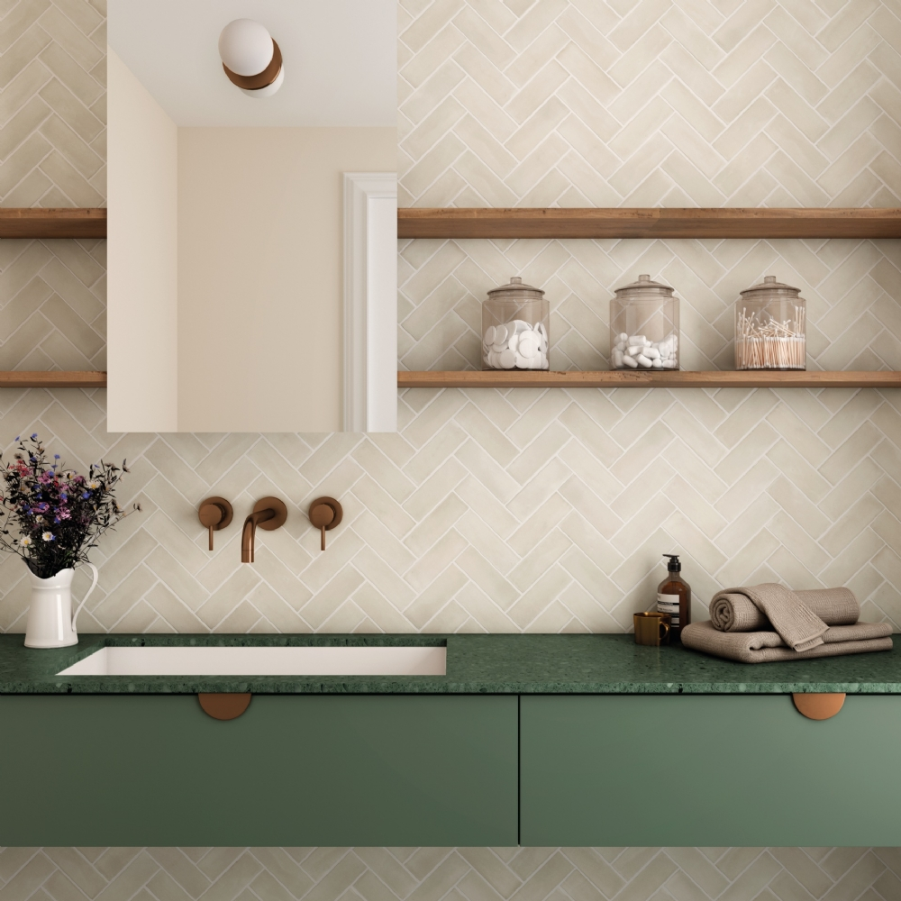
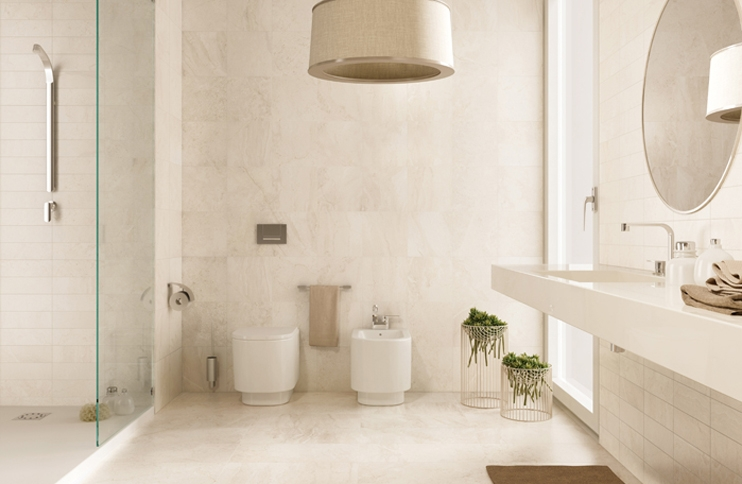
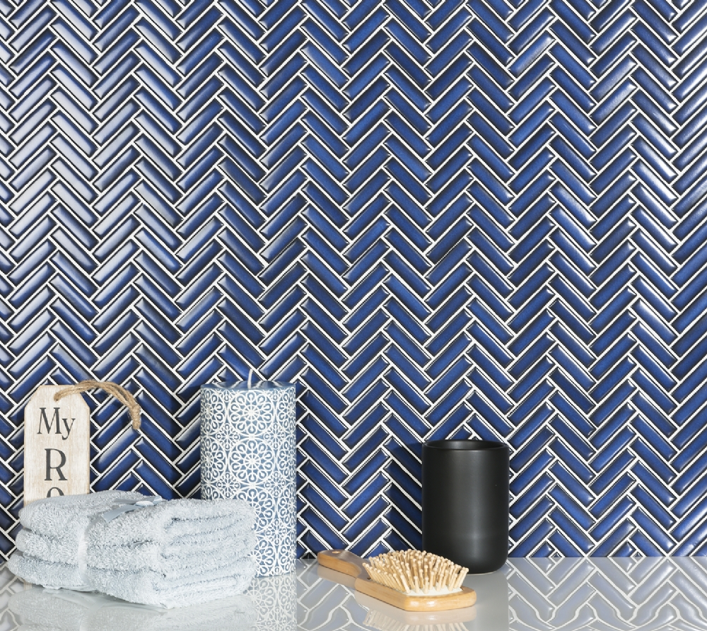

Vi erbjuder ett brett urval av kakel för varje rum och stil.
Kakel är ett klassiskt och tidlöst inredningsmaterial som passar perfekt i badrum, kök och hall. Oavsett om du söker traditionell klinker, modernt kakel eller dekorativ mosaik, hittar du det hos oss. Vår kollektion från Lhådös Kakel och andra ledande varumärken erbjuder både klassiska och samtida design som höjer vilken miljö som helst.

Badrum är ett speciellt rum där material både måste vara funktionellt och vackert. Välj fuktbeständigt kakel som tål daglig användning. Vi erbjuder allt från glansiga kakelplattor som reflekterar ljus och gör rummet större, till matta kakel med bättre grepp på golvet. Välj mellan klassiska vita, neutrala toner eller djärva färger som skapar personlighet.

Köket är hemmets hjärta och kakel är ett praktiskt och vackert val för både vägg och golv. En väl vald kakelbaksplatta bakom spisen skapar en fokuspunkt och skyddar väggen från fett och väta. På golvet kan större kakelplattor skapa en modern känsla, medan mindre kakel kan ge ett mer hemtrevligt intryck. Vi hjälper dig att kombinera stil med praktik.
Hall och entré är ofta det första man ser när man kommer in — här spelar kakel en viktig roll både för estetik och praktikalitet. Val av slitstarkt material är viktigt eftersom dessa ytor utsätts för mer slitage. Vi erbjuder robust klinker och vackert utformad kakel som kan tåla påfrestning samtidigt som det skapar ett varmt första intryck.
Om du är på jakt efter något extra spännande kan mosaik och dekorativ kakel lyfta både badrum och kök. Små mosaiker skapar rörelse och intresse, medan större dekorklinker kan bli ett starkt designelement. Från klassiska mönster till samtida geometriska former — mosaik erbjuder oändliga möjligheter för att uttrycka din personliga stil.

Osäker på vilken kakel som passar? Vår erfarna personal hjälper dig att navigera bland hundratals varianter. Vi erbjuder färgsättning, material-matching och installationsstöd för att göra valet enklare.
Besök oss i butiken